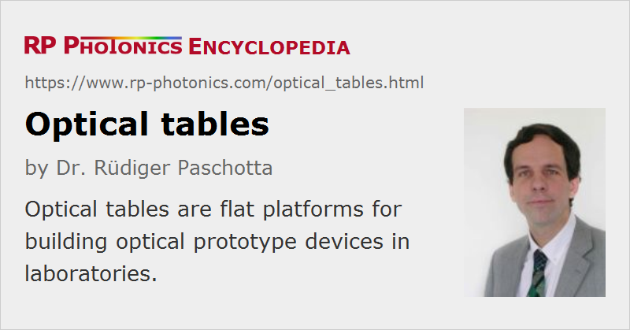

Optical Tables
Definition: platforms for building optical devices with suppression of vibrations
German: optische Tische
How to cite the article; suggest additional literature
Author: Dr. Rüdiger Paschotta
Optical tables are flat platforms for building optical prototype devices, mostly in laboratories. They usually have a rectangular top plate containing a regular grid of threaded mounting holes for fixing various types of optical mounts or posts. In that respect, they are similar to optical breadboards, but they are substantially larger than those. In addition, an optical table usually rests on four or more vibration-isolating support legs at a height above the floor which is convenient for workers. Also, its body typically much thicker than a breadboard and provides improved damping of vibrations.
Technical Details
The Top Plate
The top plate, containing the threads, forms a flat and stiff working surface. It usually consists of stainless steel, which is ferromagnetic and thus also suitable for magnetic clamps; aluminum is another possible choice. In the early times of optics, other materials such as granite and diabase have also been used, but metal-based optical table are better in terms of stiffness and damping.
The table should exhibit a high degree of flatness and preserve that even under substantial mechanical loads. This is achieved by using a stiff top plate in combination with a suitable body (see below). By using a dense plate material with a high velocity of sound, one obtains high resonance frequencies, so that at least the common low-frequency vibrations (below 100 Hz) cannot excite resonances. Note also that higher-frequency resonances can be more effectively damped.
Tables with metric or imperial thread grid spacing are available; common spacings are one inch (≈25.4 mm, imperial units) and 25 mm (metric) or half those values. Standard threads are M6 and 1/4“-20; the latter means 1/4 inch major diameter and 20 threads per inch according to the American Unified Thread Standard (UTS). With suitable screws, one can bolt down a wide range of posts and other objects.
Optical tables with quite large dimensions are available, for example with a length of several meters. Due to the dimensions and also the substantial weight, the transport into the laboratory can then be a challenge. From that viewpoint, a combination of smaller tables may be more convenient, apart from being more flexible. It is possible to mechanically connect different tables, so that one can use them essentially like a single larger table.
The mounting holes are often sealed at the bottom, so that small parts falling into holes may be retrieved.
In special cases, an Invar steel top plate with much reduced coefficient of thermal expansion is used. That can be helpful if the table is exposed to substantial heat sources and should nevertheless exhibit only a minimum amount of heat-induced bending.
The Body
The essential function of the table's body, which typically has a height around 20 to 30 centimeters (sometimes even more), is to provide a high mechanical stability even when the table is subject to substantial loads. It usually contains a honeycomb lattice, often made of steel, which can be highly stable without being too heavy.
An optical table should also exhibit well damped mechanical resonances – ideally, with critical damping for a wide range of resonances. For that purpose, additional energy absorption materials (e.g. polymer foams or rubber) may be used as broadband dampers. Further, a table can contain tuned mass dampers; such a device contains a movable mass, fixed with a spring and a damper. The resonance frequency of that sub-system is tuned to a primary table resonance, such that it can effectively suppress the corresponding vibration mode. That helps to limit the effects of vibrations caused by experiments on the table, for example.
For particularly high vibration damping performance, there are active damping systems. These contain sensors for detecting vibrations at resonance frequencies of the table, and actuators for acting against those vibrations. Best performance is achieved with a combination of active and tuned passive damping, called hybrid damping.
The Support Legs
For effective vibration control, an optical table should also be equipped with suitable isolating support legs. It is common to use large floating legs containing pneumatic isolators, where vibration energy is dissipated mostly at a small hole between two air reservoirs. Any change of table height requires air to flow from one reservoir to the other, and that leads to the dissipation of energy.
Together with those legs, the table effectively becomes a mechanical low-pass filter: while slow (low-frequency) position changes of the floor would be fully transferred to the body of the table, vibrations (e.g. by walking personnel) are largely not transmitted, creating a low mechanical noise environment for the optical setup.
The above mentioned pneumatic damping mechanism is usually quite effective against vertical vibrations, but often not against horizontal ones; there are improved systems which also provide relatively effective horizontal damping, e.g. with a pendulum mechanism.
While vibration-controlled support legs can quite effectively suppress mechanical noise coming from the floor (acting as vibration isolators, they do not help against mechanical noise generated on the table itself, for example by motorized optics, cooling fans and cooling water pumps of lasers. However, some damping is also provided within the body of the table, as explained above.
Of course, it is best to mechanically isolate any vibrating objects from the table, e.g. by mounting them separately above or below the table, or at least providing some damping material between them and the table.
Protection Against Dust
For keeping the workspace very clean, one can mount laminar flow boxes above the table. These generate a gentle laminar flow of clean air downwards to the table, much reducing the contamination of optical components with dust. For further increased protection, one may use flexible shields on the sides for reducing any contaminations by non-filtered air coming from the sides.
Applications of Optical Tables
Optical tables are very suitable for making prototype devices, e.g. in laser laboratories, because it is easy to stably mount a wide range of components but also to move or remove them as necessary. One may directly fix an optical mount on such a table, but frequently one uses a post in between them, which also gives some flexibility concerning the height. Note, however, that higher posts generally lead to reduced mechanical stability.
Once the final design of the optical setup has been developed, one will often mount it differently, for example on a tailored baseplate of a laser housing.
Possible Alternative: Optical Breadboards
In some cases, it is sufficient to use one or more optical breadboards for building prototype devices. That solution has the advantages of being much cheaper and also more portable. However, this is suitable only for setups with more limited size. Also, it may be difficult to provide the same level of vibration control and stability. Particularly for lasers and even more for interferometers, such aspects can be vital.
Suppliers
The RP Photonics Buyer's Guide contains 20 suppliers for optical tables.
Questions and Comments from Users
Here you can submit questions and comments. As far as they get accepted by the author, they will appear above this paragraph together with the author’s answer. The author will decide on acceptance based on certain criteria. Essentially, the issue must be of sufficiently broad interest.
Please do not enter personal data here; we would otherwise delete it soon. (See also our privacy declaration.) If you wish to receive personal feedback or consultancy from the author, please contact him e.g. via e-mail.
By submitting the information, you give your consent to the potential publication of your inputs on our website according to our rules. (If you later retract your consent, we will delete those inputs.) As your inputs are first reviewed by the author, they may be published with some delay.
See also: optical breadboards, opto-mechanics
and other articles in the category general optics
|  |
If you like this page, please share the link with your friends and colleagues, e.g. via social media:
These sharing buttons are implemented in a privacy-friendly way!